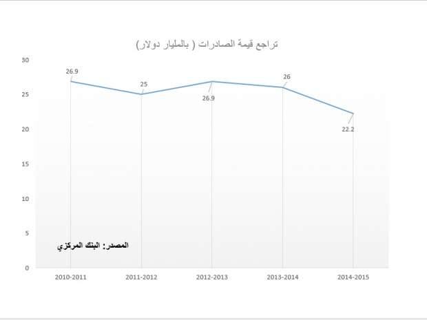
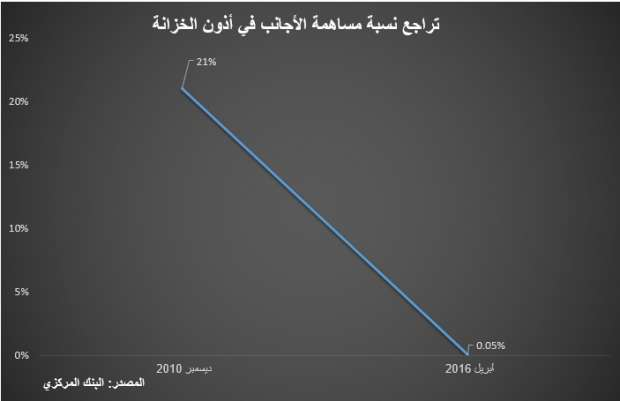
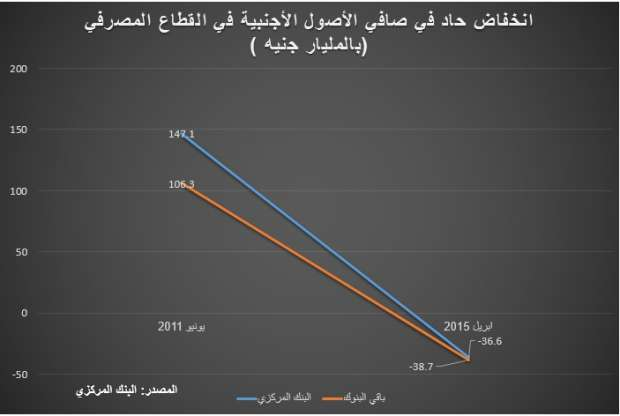
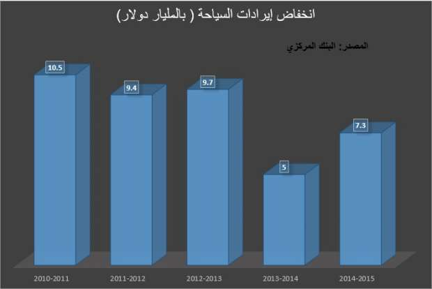
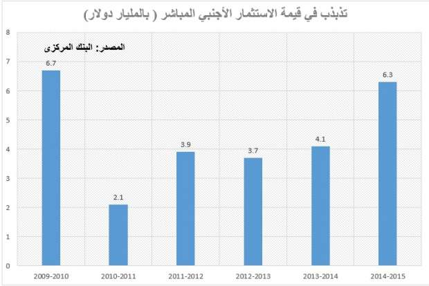

أحدث الأخبار
- الزمالك يكتسح رينجرز النيجيري بأربعة أهداف مقابل هدف وحيد
- القضاء الإداري يقضي بحل اتحاد الكرة وبطلان الانتخابات الأخيرة
- مقتل 3 أشخاص وإصابة 3 آخرين في حادث مروري بالبحيرة
- وزير الخارجية يجري اتصالاً مع رئيس المجلس الرئاسي الليبي
- عاصمة مصر تتجه لزيادة سكانية نصف مليون العام الجاري
- باولو يقود هجوم الزمالك أمام رينجرز في دوري الأبطال
- المالية تعفي المطاعم غير السياحية من ضريبة القيمة المضافة بشروط
- "القضاء الإداري" يلزم الجامعة الأمريكية بتحصيل مصروفاتها بالجنيه المصري
5 مؤشرات أعادت مصر لأحضان صندوق النقد
شعار صندوق النقد الدولي. صورة من رويترز
في أعقاب ثورة يناير أوقف المجلس العسكري مفاوضات بين الحكومة وصندوق النقد الدولي حول قرض بقيمة 3 مليارات دولار، موجه لمساندة الوضع المالي الذي كان قد بدأ في التداعي.
ولم يبد المجلس العسكري، الذي كان يتولى مقاليد الحكم آنذاك، أسبابا واضحة للرفض، لكن بعض التحليلات رجحت أنه كان متخوفا من رد الفعل الشعبي على السياسات التي يشترطها الصندوق لمنح القرض، مثل إعادة هيكلة الدعم والتوسع في ضرائب المبيعات.
وبعد أكثر من محاولة من الحكومات المتعاقبة لإحياء هذا الملف أعلنت حكومة شريف اسماعيل منذ أيام عن اقتراب نجاح مفاوضات مع المؤسسة الدولية، على قرض بنحو 12 مليار دولار.
وقالت الحكومة، العاملة في نظام حكم يرأسه رئيس قادم من المؤسسة العسكرية، إن الهدف من الاقتراض هو سد الفجوة التمويلية، فما هي طبيعة الضغوط المالية التي أعادت الدولة مجددا لأحضان الصندوق، بعد رفضه قبل سنوات؟
تراجع الصادرات
تعتبر حصيلة الصادرات من أبرز موارد النقد الأجنبي التي شهدت تراجعا قويا خلال السنوات الماضية، وكان وزير الصناعة السابق، منير فخري عبد النور قد قال في تصريحات سابقة لأصوات مصرية إن الحروب الأهلية والاضطرابات في بعض الأسواق التقليدية للمنتجات مصرية مثل ليبيا وسوريا والعراق واليمن ساهمت في التأثير على الصادرات، نظرا لأنها "أسواق مهمة وتؤثر في إجمالي الصادرات".
كما ساهمت أزمة نقص الطاقة وعدم مد المصانع بالغاز الكافي، خلال العامين الماضيين، في التأثير سلبا على الصادرات، وقال عبد النور لأصوات مصرية في تصريحات سابقة إن "هناك مصانعا أغلقت أبوابها بسبب هذه الأزمة".
ولم تستفد الصادرات من الخفض التدريجي لقيمة الجنيه مقابل الدولار، والذي كان من المفترض أن يساعد على تقليل أسعار المنتجات المصرية في الأسواق الأجنبية، وذلك يعود جزئيا الى اعتماد مصر بشكل كبير على استيراد مدخلات الإنتاج من الخارج، والتي ترتفع تكلفتها مع ارتفاع قيمة العملة الصعبة.

تراجع الأجانب عن الاستثمار في الديون المصرية
مع التراجع المستمر لاحتياطي النقد الأجنبي، والذي هبط من نحو 36 مليار دولار قبل ثورة يناير إلى نحو 17.5 مليار دولار في يونيو الماضي، تزايدت مخاطر العملة المحلية، حيث يتوقع المستثمرون باستمرار قيام البنك المركزي بتعويم الجنيه، مما يجعل شراء أصول بالجنيه ينطوي على مخاطرة انخفاض قيمتها مع كل تعويم جديد.
ومن أبرز القطاعات التي تضررت من مخاطر تذبذب قيمة العملة المحلية كانت سوق أذون الخزانة الحكومية، ديون حكومية قصيرة الأجل، والتي تراجعت مساهمة الأجانب فيها بشدة في أعقاب الثورة.
ومع قيام البنك المركزي بخفض قوي في قيمة الجنيه مقابل الدولار خلال مارس الماضي، بنحو 14%، توقع محللون تدفق استثمارات أكبر من الأجانب في أذون الخزانة، لكن بيانات البنك المركزي تظهر ارتفاعا طفيفا في مساهماتهم عقب التعويم الأخير، ويعود ذلك الى استمرار مخاطر العملة، إذ لا تزال الفجوة بين سعري الدولار الرسمي وغير الرسمي كبيرة.

تسييل الأصول الأجنبية مع التوسع في المشروعات القومية
تراجع صافي الأصول الأجنبية في القطاع المصرفي المصري تدريجيا خلال الأعوام التالية للثورة، وتحولت إلى قيمة سالبة، وهو ما يعني أن التزامات القطاع المصرفي بالعملة الأجنبية تجاوزت قيمة تلك الأصول، وهو المؤشر الذي يعكس نقص قوي في الموارد الدولارية المتاحة بالقطاع المصرفي المصري.
والأصول الأجنبية هي الاستثمارات التابعة للبنوك بالعملات الأجنبية.
وقال محمد أبو باشا، محلل الاقتصاد الكلي بالمجموعة المالية هيرميس، إن هذا الخفض جاء مدفوعا باتجاه البنوك للاستثمار بقوة بعد ثورة يناير في أذون الخزانة الدولارية المحلية، علاوة على أن القروض الدولارية التي منحتها البنوك لهيئات البترول وقناة السويس والقابضة للكهرباء، اضطرت البنوك لتسييل جزءا مهما من أصولها الأجنبية.
وقال هشام رامز في حوار تلفزيوني أذيع على قناة "القاهرة والناس" قبل تقديم استقالته في أكتوبر الماضي، إن "حفر قناة السويس وإنشاء محطات كهرباء جديدة كلفتنا مليارات الدولارات، وهذا سبب الأزمة التي حدثت في الدولار".

انخفاض قوي في إيرادات السياحة
تراجعت إيرادات السياحة عقب ثورة يناير في ظل حالة الاضطراب السياسي والأمني التي سادت البلاد، وبلغت أدنى مستوياتها في عام 2013-2014 الذي بدأ في أعقاب عزل الرئيس السابق محمد مرسي.
ومع اتجاه السياحة للتعافي نسبيا في عام 2015، جاءت حادثة سقوط الطائرة الروسي في شرم الشيخ، في أكتوبر من هذا العام، لتقضي على آمال التعافي، إذ أعقبتها اتجاه العديد من الدول لفرض قيود على السفر لمصر ومن أبرزها روسيا التي تعد من أبرز مصدري السياحة للبلاد.

تذبذب الاستثمارات الأجنبية المباشرة
ساهم تذبذب العملة وعدم استقرار الحكومات في أعقاب الثورة في انخفاض الاستثمارات الأجنبية المباشرة، بالاضافة إلى أزمة الطاقة التي لم تنجح الدولة في السيطرة عليها نسبيا إلا مع اتجاهها لاستيراد الغاز من الخارج.
وقال البنك الدولي في وثيقة أصدرها عن قرض لمصر نهاية العام الماضي إن هناك تدهور في ثقة المستثمرين الأجانب يرجع إلى عدم كفاية إتاحة النقد الأجنبي و عدم القدرة على تحويل الأرباح للخارج بسهولة.
وشهد العام المالي 2014-2015 ارتفاعا في صافي الاستثمار الأجنبي المباشر ليعود إلى مستويات ما قبل الثورة تقريبا، وقال البنك المركزي إن أرقام الاستثمار في هذا العام تم تعديلها وفقا " للبيانات المعدلة من قطاع البترول".
ولم يكشف المركزي عن تفاصيل ارتفاع الاستثمار الأجنبي في العام قبل الماضي، والذي تخلله مؤتمر شرم الشيخ الاقتصادي.
لكن البنك الدولي في وثيقة القرض قال إنه بالرغم من الصفقات الاستثمارية التي تم توقيعها في الربيع الماضي ستظل "الموازين الخارجية لمصر ستكون تحت ضغط على الأجل المتوسط".
وأوضح البنك الدولي أن التدفقات التي ستدخل مصر كاستثمارات في الطاقة خلال الأربع سنوات المقبلة سيكون 75% منها عبارة عن مكونات مستوردة (تدفقات للخارج) مما يقلل من تأثيرها على ميزان المدفوعات.

الاخبار المتعلقة


{kind=link}
تعليقات الفيسبوك